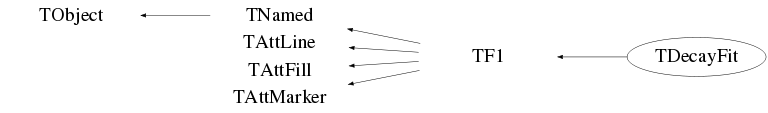

Function Members (Methods)
public:
| virtual | ~TDecayFit() |
| void | TObject::AbstractMethod(const char* method) const |
| static void | TF1::AbsValue(Bool_t reject = kTRUE) |
| virtual void | TF1::AddParameter(const TString& name, Double_t value) |
| virtual Bool_t | TF1::AddToGlobalList(Bool_t on = kTRUE) |
| virtual void | TObject::AppendPad(Option_t* option = "") |
| virtual void | TF1::Browse(TBrowser* b) |
| static void | TF1::CalcGaussLegendreSamplingPoints(Int_t num, Double_t* x, Double_t* w, Double_t eps = 3.0E-11) |
| virtual Double_t | TF1::CentralMoment(Double_t n, Double_t a, Double_t b, const Double_t* params = 0, Double_t epsilon = 9.9999999999999995E-7) |
| ULong_t | TObject::CheckedHash() |
| static TClass* | Class() |
| virtual const char* | TObject::ClassName() const |
| virtual void | TNamed::Clear(Option_t* option = "") |
| virtual TObject* | TNamed::Clone(const char* newname = "") const |
| virtual Int_t | TNamed::Compare(const TObject* obj) const |
| virtual void | TF1::Copy(TObject& f1) const |
| virtual TH1* | TF1::CreateHistogram() |
| static Bool_t | TF1::DefaultAddToGlobalList(Bool_t on = kTRUE) |
| virtual void | TObject::Delete(Option_t* option = "")MENU |
| virtual Double_t | TF1::Derivative(Double_t x, Double_t* params = 0, Double_t epsilon = 0.001) const |
| virtual Double_t | TF1::Derivative2(Double_t x, Double_t* params = 0, Double_t epsilon = 0.001) const |
| virtual Double_t | TF1::Derivative3(Double_t x, Double_t* params = 0, Double_t epsilon = 0.001) const |
| static Double_t | TF1::DerivativeError() |
| Int_t | TAttLine::DistancetoLine(Int_t px, Int_t py, Double_t xp1, Double_t yp1, Double_t xp2, Double_t yp2) |
| virtual Int_t | TF1::DistancetoPrimitive(Int_t px, Int_t py) |
| virtual TH1* | TF1::DoCreateHistogram(Double_t xmin, Double_t xmax, Bool_t recreate = kFALSE) |
| void | TF1::DoInitialize(TF1::EAddToList addToGlobList) |
| virtual void | TF1::Draw(Option_t* option = "") |
| virtual void | TObject::DrawClass() constMENU |
| virtual TObject* | TObject::DrawClone(Option_t* option = "") constMENU |
| void | DrawComponents() constMENU |
| virtual TF1* | TF1::DrawCopy(Option_t* option = "") const |
| virtual TObject* | TF1::DrawDerivative(Option_t* option = "al")MENU |
| virtual void | TF1::DrawF1(Double_t xmin, Double_t xmax, Option_t* option = "") |
| virtual TObject* | TF1::DrawIntegral(Option_t* option = "al")MENU |
| void | DrawResiduals()MENU |
| virtual void | TObject::Dump() constMENU |
| virtual void | TObject::Error(const char* method, const char* msgfmt) const |
| virtual Double_t | TF1::Eval(Double_t x, Double_t y = 0, Double_t z = 0, Double_t t = 0) const |
| virtual Double_t | TF1::EvalPar(const Double_t* x, const Double_t* params = 0) |
| double | TF1::EvalPar<double>(const double* x, const Double_t* params = 0) |
| virtual void | TObject::Execute(const char* method, const char* params, Int_t* error = 0) |
| virtual void | TObject::Execute(TMethod* method, TObjArray* params, Int_t* error = 0) |
| virtual void | TF1::ExecuteEvent(Int_t event, Int_t px, Int_t py) |
| virtual void | TObject::Fatal(const char* method, const char* msgfmt) const |
| virtual void | TNamed::FillBuffer(char*& buffer) |
| virtual TObject* | TObject::FindObject(const char* name) const |
| virtual TObject* | TObject::FindObject(const TObject* obj) const |
| TFitResultPtr | Fit(TH1* hist, Option_t* opt = "") |
| virtual void | TF1::FixParameter(Int_t ipar, Double_t value) |
| Double_t | TF1::GetChisquare() const |
| static TF1* | TF1::GetCurrent() |
| TVirtualDecay* | GetDecay() const |
| virtual Option_t* | TObject::GetDrawOption() const |
| static Long_t | TObject::GetDtorOnly() |
| virtual TString | TF1::GetExpFormula(Option_t* option = "") const |
| virtual Color_t | TAttFill::GetFillColor() const |
| virtual Style_t | TAttFill::GetFillStyle() const |
| virtual TFormula* | TF1::GetFormula() |
| virtual const TFormula* | TF1::GetFormula() const |
| virtual TH1* | TF1::GetHistogram() const |
| virtual const char* | TObject::GetIconName() const |
| virtual const TObject* | TF1::GetLinearPart(Int_t i) const |
| virtual Color_t | TAttLine::GetLineColor() const |
| virtual Style_t | TAttLine::GetLineStyle() const |
| virtual Width_t | TAttLine::GetLineWidth() const |
| virtual Color_t | TAttMarker::GetMarkerColor() const |
| virtual Size_t | TAttMarker::GetMarkerSize() const |
| virtual Style_t | TAttMarker::GetMarkerStyle() const |
| virtual Double_t | TF1::GetMaximum(Double_t xmin = 0, Double_t xmax = 0, Double_t epsilon = 1.0E-10, Int_t maxiter = 100, Bool_t logx = false) const |
| virtual Double_t | TF1::GetMaximumStored() const |
| virtual Double_t | TF1::GetMaximumX(Double_t xmin = 0, Double_t xmax = 0, Double_t epsilon = 1.0E-10, Int_t maxiter = 100, Bool_t logx = false) const |
| TMethodCall* | TF1::GetMethodCall() const |
| virtual Double_t | TF1::GetMinimum(Double_t xmin = 0, Double_t xmax = 0, Double_t epsilon = 1.0E-10, Int_t maxiter = 100, Bool_t logx = false) const |
| virtual Double_t | TF1::GetMinimumStored() const |
| virtual Double_t | TF1::GetMinimumX(Double_t xmin = 0, Double_t xmax = 0, Double_t epsilon = 1.0E-10, Int_t maxiter = 100, Bool_t logx = false) const |
| virtual Double_t | TF1::GetMinMaxNDim(Double_t* x, Bool_t findmax, Double_t epsilon = 0, Int_t maxiter = 0) const |
| virtual const char* | TNamed::GetName() const |
| virtual Int_t | TF1::GetNDF() const |
| virtual Int_t | TF1::GetNdim() const |
| virtual Int_t | TF1::GetNpar() const |
| virtual Int_t | TF1::GetNpx() const |
| virtual Int_t | TF1::GetNumber() const |
| virtual Int_t | TF1::GetNumberFitPoints() const |
| virtual Int_t | TF1::GetNumberFreeParameters() const |
| virtual char* | TF1::GetObjectInfo(Int_t px, Int_t py) const |
| static Bool_t | TObject::GetObjectStat() |
| virtual Option_t* | TObject::GetOption() const |
| virtual Double_t | TF1::GetParameter(Int_t ipar) const |
| virtual Double_t | TF1::GetParameter(const TString& name) const |
| virtual Double_t* | TF1::GetParameters() const |
| virtual void | TF1::GetParameters(Double_t* params) |
| TObject* | TF1::GetParent() const |
| virtual Double_t | TF1::GetParError(Int_t ipar) const |
| virtual const Double_t* | TF1::GetParErrors() const |
| virtual void | TF1::GetParLimits(Int_t ipar, Double_t& parmin, Double_t& parmax) const |
| virtual const char* | TF1::GetParName(Int_t ipar) const |
| virtual Int_t | TF1::GetParNumber(const char* name) const |
| virtual Double_t | TF1::GetProb() const |
| virtual Int_t | TF1::GetQuantiles(Int_t nprobSum, Double_t* q, const Double_t* probSum) |
| virtual Double_t | TF1::GetRandom() |
| virtual Double_t | TF1::GetRandom(Double_t xmin, Double_t xmax) |
| virtual void | TF1::GetRange(Double_t* xmin, Double_t* xmax) const |
| virtual void | TF1::GetRange(Double_t& xmin, Double_t& xmax) const |
| virtual void | TF1::GetRange(Double_t& xmin, Double_t& ymin, Double_t& xmax, Double_t& ymax) const |
| virtual void | TF1::GetRange(Double_t& xmin, Double_t& ymin, Double_t& zmin, Double_t& xmax, Double_t& ymax, Double_t& zmax) const |
| TGraph* | GetResiduals() |
| virtual Double_t | TF1::GetSave(const Double_t* x) |
| virtual const char* | TNamed::GetTitle() const |
| virtual UInt_t | TObject::GetUniqueID() const |
| virtual Double_t | TF1::GetVariable(const TString& name) |
| virtual Double_t | TF1::GetX(Double_t y, Double_t xmin = 0, Double_t xmax = 0, Double_t epsilon = 1.0E-10, Int_t maxiter = 100, Bool_t logx = false) const |
| TAxis* | TF1::GetXaxis() const |
| virtual Double_t | TF1::GetXmax() const |
| virtual Double_t | TF1::GetXmin() const |
| TAxis* | TF1::GetYaxis() const |
| TAxis* | TF1::GetZaxis() const |
| virtual Double_t | TF1::GradientPar(Int_t ipar, const Double_t* x, Double_t eps = 0.01) |
| virtual void | TF1::GradientPar(const Double_t* x, Double_t* grad, Double_t eps = 0.01) |
| double | TF1::GradientParTempl<double>(Int_t ipar, const double* x, Double_t eps = 0.01) |
| void | TF1::GradientParTempl<double>(const double* x, double* grad, Double_t eps = 0.01) |
| virtual Bool_t | TObject::HandleTimer(TTimer* timer) |
| virtual ULong_t | TNamed::Hash() const |
| Bool_t | TObject::HasInconsistentHash() const |
| virtual void | TObject::Info(const char* method, const char* msgfmt) const |
| virtual Bool_t | TObject::InheritsFrom(const char* classname) const |
| virtual Bool_t | TObject::InheritsFrom(const TClass* cl) const |
| virtual void | TF1::InitArgs(const Double_t* x, const Double_t* params) |
| static void | TF1::InitStandardFunctions() |
| virtual void | TObject::Inspect() constMENU |
| virtual Double_t | TF1::Integral(Double_t a, Double_t b, Double_t epsrel = 9.9999999999999998E-13) |
| virtual Double_t | TF1::IntegralError(Double_t a, Double_t b, const Double_t* params = 0, const Double_t* covmat = 0, Double_t epsilon = 0.01) |
| virtual Double_t | TF1::IntegralError(Int_t n, const Double_t* a, const Double_t* b, const Double_t* params = 0, const Double_t* covmat = 0, Double_t epsilon = 0.01) |
| virtual Double_t | TF1::IntegralFast(Int_t num, Double_t* x, Double_t* w, Double_t a, Double_t b, Double_t* params = 0, Double_t epsilon = 9.9999999999999998E-13) |
| virtual Double_t | TF1::IntegralMultiple(Int_t n, const Double_t* a, const Double_t* b, Double_t epsrel, Double_t& relerr) |
| virtual Double_t | TF1::IntegralMultiple(Int_t n, const Double_t* a, const Double_t* b, Int_t maxpts, Double_t epsrel, Double_t epsabs, Double_t& relerr, Int_t& nfnevl, Int_t& ifail) |
| virtual Double_t | TF1::IntegralMultiple(Int_t n, const Double_t* a, const Double_t* b, Int_t, Int_t maxpts, Double_t epsrel, Double_t& relerr, Int_t& nfnevl, Int_t& ifail) |
| virtual Double_t | TF1::IntegralOneDim(Double_t a, Double_t b, Double_t epsrel, Double_t epsabs, Double_t& err) |
| void | TF1::IntegrateForNormalization() |
| void | TObject::InvertBit(UInt_t f) |
| virtual TClass* | IsA() const |
| virtual Bool_t | TObject::IsEqual(const TObject* obj) const |
| virtual Bool_t | TF1::IsEvalNormalized() const |
| virtual Bool_t | TObject::IsFolder() const |
| virtual Bool_t | TF1::IsInside(const Double_t* x) const |
| virtual Bool_t | TF1::IsLinear() const |
| Bool_t | TObject::IsOnHeap() const |
| virtual Bool_t | TNamed::IsSortable() const |
| virtual Bool_t | TAttFill::IsTransparent() const |
| virtual Bool_t | TF1::IsValid() const |
| bool | TF1::IsVectorized() |
| Bool_t | TObject::IsZombie() const |
| virtual void | TNamed::ls(Option_t* option = "") const |
| void | TObject::MayNotUse(const char* method) const |
| virtual Double_t | TF1::Mean(Double_t a, Double_t b, const Double_t* params = 0, Double_t epsilon = 9.9999999999999995E-7) |
| virtual void | TAttLine::Modify() |
| virtual Double_t | TF1::Moment(Double_t n, Double_t a, Double_t b, const Double_t* params = 0, Double_t epsilon = 9.9999999999999995E-7) |
| virtual Bool_t | TObject::Notify() |
| void | TObject::Obsolete(const char* method, const char* asOfVers, const char* removedFromVers) const |
| void | TObject::operator delete(void* ptr) |
| void | TObject::operator delete(void* ptr, void* vp) |
| void | TObject::operator delete[](void* ptr) |
| void | TObject::operator delete[](void* ptr, void* vp) |
| void* | TObject::operator new(size_t sz) |
| void* | TObject::operator new(size_t sz, void* vp) |
| void* | TObject::operator new[](size_t sz) |
| void* | TObject::operator new[](size_t sz, void* vp) |
| virtual Double_t | TF1::operator()(Double_t x, Double_t y = 0, Double_t z = 0, Double_t t = 0) const |
| TDecayFit& | operator=(const TDecayFit&) |
| virtual void | TF1::Paint(Option_t* option = "") |
| virtual void | TObject::Pop() |
| virtual void | Print(Option_t* opt = "") const |
| virtual Int_t | TObject::Read(const char* name) |
| virtual void | TObject::RecursiveRemove(TObject* obj) |
| static Bool_t | TF1::RejectedPoint() |
| static void | TF1::RejectPoint(Bool_t reject = kTRUE) |
| virtual void | TF1::ReleaseParameter(Int_t ipar) |
| virtual void | TAttFill::ResetAttFill(Option_t* option = "") |
| virtual void | TAttLine::ResetAttLine(Option_t* option = "") |
| virtual void | TAttMarker::ResetAttMarker(Option_t* toption = "") |
| void | TObject::ResetBit(UInt_t f) |
| virtual void | TF1::Save(Double_t xmin, Double_t xmax, Double_t ymin, Double_t ymax, Double_t zmin, Double_t zmax) |
| virtual void | TObject::SaveAs(const char* filename = "", Option_t* option = "") constMENU |
| virtual void | TAttFill::SaveFillAttributes(ostream& out, const char* name, Int_t coldef = 1, Int_t stydef = 1001) |
| virtual void | TAttLine::SaveLineAttributes(ostream& out, const char* name, Int_t coldef = 1, Int_t stydef = 1, Int_t widdef = 1) |
| virtual void | TAttMarker::SaveMarkerAttributes(ostream& out, const char* name, Int_t coldef = 1, Int_t stydef = 1, Int_t sizdef = 1) |
| virtual void | TF1::SavePrimitive(ostream& out, Option_t* option = "") |
| void | TObject::SetBit(UInt_t f) |
| void | TObject::SetBit(UInt_t f, Bool_t set) |
| virtual void | TF1::SetChisquare(Double_t chi2) |
| static void | TF1::SetCurrent(TF1* f1) |
| void | SetDecay(TVirtualDecay* decay) |
| virtual void | TObject::SetDrawOption(Option_t* option = "")MENU |
| static void | TObject::SetDtorOnly(void* obj) |
| virtual void | TAttFill::SetFillAttributes()MENU |
| virtual void | TAttFill::SetFillColor(Color_t fcolor) |
| virtual void | TAttFill::SetFillColorAlpha(Color_t fcolor, Float_t falpha) |
| virtual void | TAttFill::SetFillStyle(Style_t fstyle) |
| virtual void | TF1::SetFitResult(const ROOT::Fit::FitResult& result, const Int_t* indpar = 0) |
| virtual void | TAttLine::SetLineAttributes()MENU |
| virtual void | TAttLine::SetLineColor(Color_t lcolor) |
| virtual void | TAttLine::SetLineColorAlpha(Color_t lcolor, Float_t lalpha) |
| virtual void | TAttLine::SetLineStyle(Style_t lstyle) |
| virtual void | TAttLine::SetLineWidth(Width_t lwidth) |
| virtual void | TAttMarker::SetMarkerAttributes()MENU |
| virtual void | TAttMarker::SetMarkerColor(Color_t mcolor = 1) |
| virtual void | TAttMarker::SetMarkerColorAlpha(Color_t mcolor, Float_t malpha) |
| virtual void | TAttMarker::SetMarkerSize(Size_t msize = 1) |
| virtual void | TAttMarker::SetMarkerStyle(Style_t mstyle = 1) |
| virtual void | TF1::SetMaximum(Double_t maximum = -1111)MENU |
| virtual void | TF1::SetMinimum(Double_t minimum = -1111)MENU |
| virtual void | TNamed::SetName(const char* name)MENU |
| virtual void | TNamed::SetNameTitle(const char* name, const char* title) |
| virtual void | TF1::SetNDF(Int_t ndf) |
| virtual void | TF1::SetNormalized(Bool_t flag) |
| virtual void | TF1::SetNpx(Int_t npx = 100)MENU |
| virtual void | TF1::SetNumberFitPoints(Int_t npfits) |
| static void | TObject::SetObjectStat(Bool_t stat) |
| virtual void | TF1::SetParameter(Int_t param, Double_t value) |
| virtual void | TF1::SetParameter(const TString& name, Double_t value) |
| virtual void | TF1::SetParameters(const Double_t* params) |
| virtual void | TF1::SetParameters(Double_t p0, Double_t p1, Double_t p2 = 0, Double_t p3 = 0, Double_t p4 = 0, Double_t p5 = 0, Double_t p6 = 0, Double_t p7 = 0, Double_t p8 = 0, Double_t p9 = 0, Double_t p10 = 0)MENU |
| virtual void | TF1::SetParent(TObject* p = 0) |
| virtual void | TF1::SetParError(Int_t ipar, Double_t error) |
| virtual void | TF1::SetParErrors(const Double_t* errors) |
| virtual void | TF1::SetParLimits(Int_t ipar, Double_t parmin, Double_t parmax) |
| virtual void | TF1::SetParName(Int_t ipar, const char* name) |
| virtual void | TF1::SetParNames(const char* name0 = "p0", const char* name1 = "p1", const char* name2 = "p2", const char* name3 = "p3", const char* name4 = "p4", const char* name5 = "p5", const char* name6 = "p6", const char* name7 = "p7", const char* name8 = "p8", const char* name9 = "p9", const char* name10 = "p10")MENU |
| virtual void | TF1::SetRange(Double_t xmin, Double_t xmax)MENU |
| virtual void | TF1::SetRange(Double_t xmin, Double_t ymin, Double_t xmax, Double_t ymax) |
| virtual void | TF1::SetRange(Double_t xmin, Double_t ymin, Double_t zmin, Double_t xmax, Double_t ymax, Double_t zmax) |
| virtual void | TF1::SetSavedPoint(Int_t point, Double_t value) |
| virtual void | TF1::SetTitle(const char* title = "")MENU |
| virtual void | TObject::SetUniqueID(UInt_t uid) |
| virtual void | TF1::SetVectorized(Bool_t vectorized) |
| virtual void | ShowMembers(TMemberInspector& insp) const |
| virtual Int_t | TNamed::Sizeof() const |
| virtual void | Streamer(TBuffer&) |
| void | StreamerNVirtual(TBuffer& ClassDef_StreamerNVirtual_b) |
| virtual void | TObject::SysError(const char* method, const char* msgfmt) const |
| TDecayFit() | |
| TDecayFit(const TDecayFit&) | |
| TDecayFit(const char* name, const char* formula, Double_t xmin = 0, Double_t xmax = 1) | |
| TDecayFit(const char* name, Double_t xmin, Double_t xmax, Int_t npar) | |
| TDecayFit(const char* name, ROOT::Math::ParamFunctor f, Double_t xmin = 0, Double_t xmax = 1, Int_t npar = 0) | |
| Bool_t | TObject::TestBit(UInt_t f) const |
| Int_t | TObject::TestBits(UInt_t f) const |
| virtual void | TF1::Update() |
| void | UpdateResiduals(TH1* hist) |
| virtual void | TObject::UseCurrentStyle() |
| virtual Double_t | TF1::Variance(Double_t a, Double_t b, const Double_t* params = 0, Double_t epsilon = 9.9999999999999995E-7) |
| virtual void | TObject::Warning(const char* method, const char* msgfmt) const |
| virtual Int_t | TObject::Write(const char* name = 0, Int_t option = 0, Int_t bufsize = 0) |
| virtual Int_t | TObject::Write(const char* name = 0, Int_t option = 0, Int_t bufsize = 0) const |
protected:
| virtual void | TObject::DoError(int level, const char* location, const char* fmt, va_list va) const |
| void | TObject::MakeZombie() |
private:
| virtual Bool_t | CheckTObjectHashConsistency() const |
| void | DefaultGraphs() |
Data Members
public:
| static atomic<Bool_t> | TF1::fgAbsValue | use absolute value of function when computing integral |
| static atomic<Bool_t> | TF1::fgAddToGlobList | True if we want to register the function in the global list |
| static TF1* | TF1::fgCurrent | pointer to current function being processed |
| static Bool_t | TF1::fgRejectPoint | True if point must be rejected in a fit |
| static TObject::(anonymous) | TObject::kBitMask | |
| static TObject::EStatusBits | TObject::kCanDelete | |
| static TObject::EStatusBits | TObject::kCannotPick | |
| static TObject::EStatusBits | TObject::kHasUUID | |
| static TObject::(anonymous) | TObject::kInconsistent | |
| static TObject::EStatusBits | TObject::kInvalidObject | |
| static TObject::(anonymous) | TObject::kIsOnHeap | |
| static TObject::EStatusBits | TObject::kIsReferenced | |
| static TObject::EStatusBits | TObject::kMustCleanup | |
| static TObject::EStatusBits | TObject::kNoContextMenu | |
| static TObject::(anonymous) | TObject::kNotDeleted | |
| static TF1::EStatusBits | TF1::kNotDraw | |
| static TF1::EStatusBits | TF1::kNotGlobal | |
| static TObject::EDeprecatedStatusBits | TObject::kObjInCanvas | |
| static TObject::(anonymous) | TObject::kOverwrite | |
| static TObject::(anonymous) | TObject::kSingleKey | |
| static TObject::(anonymous) | TObject::kWriteDelete | |
| static TObject::(anonymous) | TObject::kZombie |
protected:
| vector<Double_t> | TF1::fAlpha | !Array alpha. for each bin in x the deconvolution r of fIntegral |
| vector<Double_t> | TF1::fBeta | !Array beta. is approximated by x = alpha +beta*r *gamma*r**2 |
| Double_t | TF1::fChisquare | Function fit chisquare |
| unique_ptr<TF1AbsComposition> | TF1::fComposition | ! Pointer to composition (NSUM or CONV) |
| TF1AbsComposition* | TF1::fComposition_ptr | saved pointer (unique_ptr is transient) |
| Color_t | TAttFill::fFillColor | Fill area color |
| Style_t | TAttFill::fFillStyle | Fill area style |
| TFormula* | TF1::fFormula | Pointer to TFormula in case when user define formula |
| TF1::TF1FunctorPointer* | TF1::fFunctor | ! Functor object to wrap any C++ callable object |
| vector<Double_t> | TF1::fGamma | !Array gamma. |
| TH1* | TF1::fHistogram | !Pointer to histogram used for visualisation |
| vector<Double_t> | TF1::fIntegral | !Integral of function binned on fNpx bins |
| Color_t | TAttLine::fLineColor | Line color |
| Style_t | TAttLine::fLineStyle | Line style |
| Width_t | TAttLine::fLineWidth | Line width |
| Color_t | TAttMarker::fMarkerColor | Marker color |
| Size_t | TAttMarker::fMarkerSize | Marker size |
| Style_t | TAttMarker::fMarkerStyle | Marker style |
| Double_t | TF1::fMaximum | Maximum value for plotting |
| TMethodCall* | TF1::fMethodCall | !Pointer to MethodCall in case of interpreted function |
| Double_t | TF1::fMinimum | Minimum value for plotting |
| Int_t | TF1::fNDF | Number of degrees of freedom in the fit |
| TString | TNamed::fName | object identifier |
| Int_t | TF1::fNdim | Function dimension |
| Double_t | TF1::fNormIntegral | Integral of the function before being normalized |
| Bool_t | TF1::fNormalized | Normalization option (false by default) |
| Int_t | TF1::fNpar | Number of parameters |
| Int_t | TF1::fNpfits | Number of points used in the fit |
| Int_t | TF1::fNpx | Number of points used for the graphical representation |
| vector<Double_t> | TF1::fParErrors | Array of errors of the fNpar parameters |
| vector<Double_t> | TF1::fParMax | Array of upper limits of the fNpar parameters |
| vector<Double_t> | TF1::fParMin | Array of lower limits of the fNpar parameters |
| TF1Parameters* | TF1::fParams | Pointer to Function parameters object (exists only for not-formula functions) |
| TObject* | TF1::fParent | !Parent object hooking this function (if one) |
| vector<Double_t> | TF1::fSave | Array of fNsave function values |
| TString | TNamed::fTitle | object title |
| TF1::EFType | TF1::fType | |
| Double_t | TF1::fXmax | Upper bounds for the range |
| Double_t | TF1::fXmin | Lower bounds for the range |
| static TF1::EFType | TF1::kCompositionFcn | |
| static TF1::EFType | TF1::kFormula | |
| static TF1::EFType | TF1::kInterpreted | |
| static TF1::EFType | TF1::kPtrScalarFreeFcn | |
| static TF1::EFType | TF1::kTemplScalar | |
| static TF1::EFType | TF1::kTemplVec |
private:
| TVirtualDecay* | fDecay | VirtualDecay that made this fit |
| TGraph | fResiduals | Last histogram fit by this function |
Class Charts



Function documentation
void Print(Option_t* opt = "") const
This prints the parameters of the fit (decay rate, intensities, etc...)
TVirtualDecay* GetDecay() const
void DefaultGraphs()
void UpdateResiduals(TH1* hist)
void DrawResiduals()
TDecayFit(const char* name, ROOT::Math::ParamFunctor f, Double_t xmin = 0, Double_t xmax = 1, Int_t npar = 0)
TDecayFit(const char* name, ROOT::Math::ParamFunctor f, Double_t xmin = 0, Double_t xmax = 1, Int_t npar = 0)